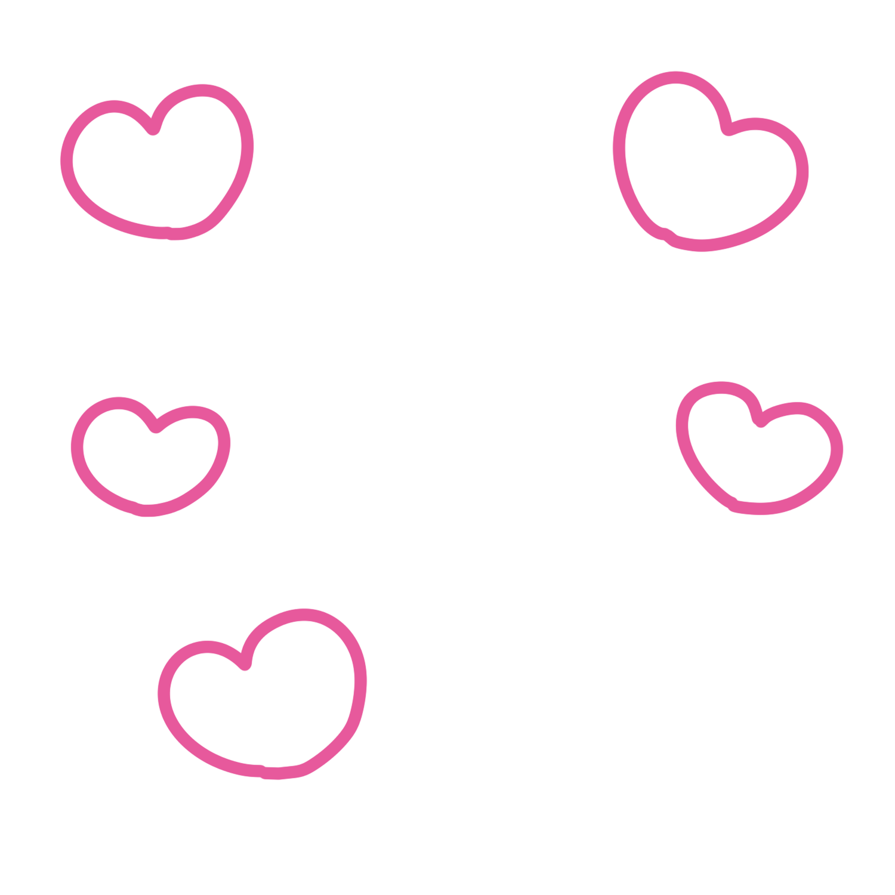
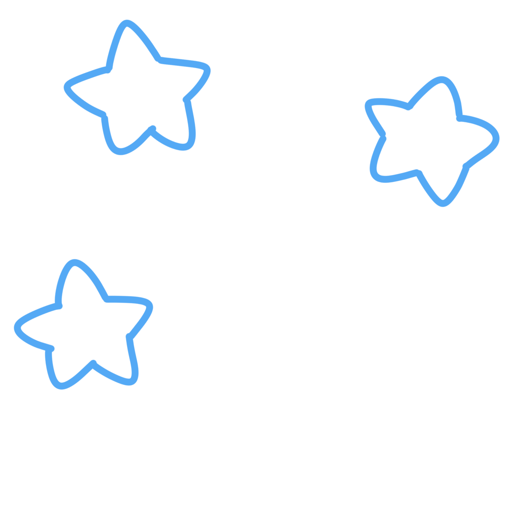

<a-scene embedded arjs="trackingMethod: best; sourceType: webcam; debugUIEnabled: false;">
  <a-assets>
    
    
    
  </a-assets>

  <a-marker type="pattern" url="pattern-sheep.patt">
    <a-image src="#sheep-img" position="0 0 0" rotation="-90 0 0" width="1.5" height="1.5"></a-image>
    <a-image id="layer-heart" src="#heart-img" position="0 0.2 0" rotation="-90 0 0" width="1.5" height="1.5" visible="true"></a-image>
    <a-image id="layer-star" src="#star-img" position="0 0.2 0" rotation="-90 0 0" width="1.5" height="1.5" visible="false"></a-image>
  </a-marker>
  
  <a-entity camera></a-entity>
</a-scene>
